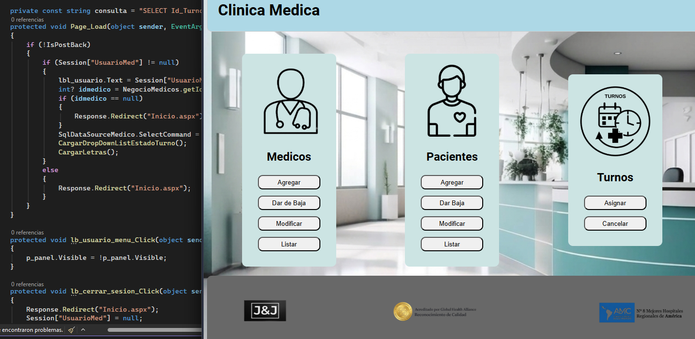

Hola, soy
Jose Zenteno
Programador Backend en formación
Soy estudiante de la Tecnicatura Universitaria en Programación en la UTN General Pacheco, con un fuerte interés en el desarrollo backend. Actualmente continúo ampliando mis conocimientos en C++, C#, .NET, APIs REST y bases de datos mediante el desarrollo de proyectos personales y académicos, buscando comprender la lógica detrás de cada solución y mejorar constantemente como desarrollador. Además de la formación universitaria, dedico tiempo a seguir aprendiendo de forma autodidacta, explorando nuevas tecnologías y fortaleciendo mis habilidades para enfrentar desafíos reales. Actualmente me encuentro en búsqueda de mi primera oportunidad profesional como desarrollador backend, donde pueda aportar valor, seguir aprendiendo y crecer dentro del desarrollo de software.
¿Quién soy?
Soy José Zenteno, estudiante de la Tecnicatura Universitaria en Programación de la UTN General Pacheco,
con un fuerte interés en el desarrollo backend. Además de mi formación universitaria, continúo aprendiendo de
manera autodidacta, profundizando mis conocimientos en C++, C#, .NET, APIs REST, bases de datos y otras tecnologías
que me permitan seguir creciendo como desarrollador.
Mi camino hacia la programación comenzó de una forma diferente. Durante mis estudios secundarios
me formé como Técnico Electromecánico y, en un principio, imaginaba mi futuro dentro de ese rubro.
Incluso tuve la oportunidad de trabajar en esa área.
Con el tiempo, al tener mi propia computadora y comenzar a utilizarla cada vez más, descubrí que lo
que realmente me despertaba curiosidad no era solo usar las aplicaciones, sino entender cómo funcionaban
y aprender a desarrollar las mías. Esa curiosidad fue la que me llevó a comenzar la Tecnicatura en Programación
y, desde entonces, confirmé que este es el camino al que quiero dedicarme profesionalmente.
Hoy disfruto aprender nuevas tecnologías, comprender la lógica detrás de cada solución y desarrollar
proyectos que me permitan mejorar constantemente. Mi objetivo es obtener mi primera oportunidad como
desarrollador backend, aportar valor a un equipo de trabajo y continuar creciendo tanto a nivel profesional como personal.
Tecnologias

C++

C#

HTML

CSS

JavaScrip

ASP.NET
ASP.NET core API

SQL Server

Visual Studio

VS Code

GitHub
Proyectos

Sistema de Gestion clinica
Sistema para la gestión de turnos, pacientes, médicos e informes. Proyecto académico desarrollado con ASP.NET y SQL Server.
Sistema de gestión de transporte
Sistema de gestión de transporte desarrollado en C++, enfocado en la administración de vehículos, viajes y venta de pasajes.
 Mail
Mail LinkedIn
LinkedIn